Memulai dengan Word (Getting Started with Word)
Antarmuka Word
Saat Anda membuka Word untuk pertama kalinya, Layar Mulai akan muncul. Dari sini, Anda dapat membuat dokumen baru, memilih template, dan mengakses dokumen yang baru saja diedit. Dari Layar Mulai, cari dan pilih Dokumen kosong untuk mengakses antarmuka Word.

Klik tombol di interaktif di bawah ini untuk mempelajari lebih lanjut tentang antarmuka Word.

Bekerja dengan lingkungan Word
Semua versi Word terbaru menyertakan Ribbon dan Quick Access Toolbar, tempat Anda akan menemukan perintah untuk melakukan tugas umum di Word, serta tampilan Backstage.
Ribbon
Word menggunakan sistem pita tab daripada menu tradisional. The Ribbon berisi beberapa tab, yang dapat Anda temukan di dekat bagian atas jendela Word.
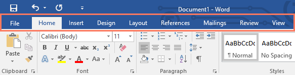
Setiap tab berisi beberapa kelompok perintah terkait. Misalnya, grup Font pada tab Beranda berisi perintah untuk memformat teks dalam dokumen Anda.
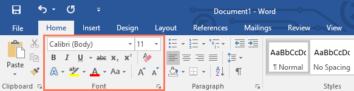
Beberapa grup juga memiliki panah kecil di sudut kanan bawah yang dapat Anda klik untuk opsi lainnya.
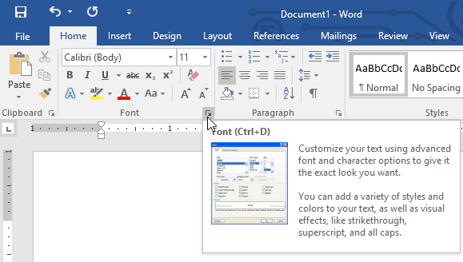
Menampilkan dan menyembunyikan Ribbon
Jika Anda menemukan bahwa Ribbon memakan terlalu banyak ruang layar, Anda dapat menyembunyikannya. Untuk melakukan ini, klik panah Opsi Tampilan Ribbon di sudut kanan atas Ribbon, lalu pilih opsi yang diinginkan dari menu drop-down:

Ribbon Sembunyikan Otomatis : Sembunyikan otomatis menampilkan dokumen Anda dalam mode layar penuh dan sepenuhnya menyembunyikan Ribbon dari pandangan. Untuk menampilkan Ribbon, klik perintah Expand Ribbon di bagian atas layar.
Tampilkan Tab : Opsi ini menyembunyikan semua grup perintah saat tidak digunakan, tetapi tab akan tetap terlihat. Untuk menampilkan Ribbon, cukup klik tab.
Show Tabs and Commands : Opsi ini memaksimalkan Ribbon. Semua tab dan perintah akan terlihat. Opsi ini dipilih secara default saat Anda membuka Word untuk pertama kalinya.
Untuk mempelajari cara menambahkan tab dan perintah khusus ke Ribbon, tinjau Ekstra kami tentang Menyesuaikan Ribbon.
Menggunakan fitur Tell me
Jika Anda kesulitan menemukan perintah yang Anda inginkan, fitur Beritahu Saya dapat membantu. Ini berfungsi seperti bilah pencarian biasa. Ketik apa yang Anda cari, dan daftar opsi akan muncul. Anda kemudian dapat menggunakan perintah langsung dari menu tanpa harus menemukannya di Ribbon.

Quick Access Toolbar
Terletak tepat di atas Ribbon, Quick Access Toolbar memungkinkan Anda mengakses perintah umum apa pun tab yang dipilih. Secara default, ini menunjukkan perintah Save, Undo, dan Redo, tetapi Anda dapat menambahkan perintah lain tergantung pada kebutuhan Anda.
Untuk menambahkan perintah ke Quick Access Toolbar:
Klik panah drop-down di sebelah kanan Quick Access Toolbar.

Pilih perintah yang ingin Anda tambahkan dari menu.

Perintah akan ditambahkan ke Quick Access Toolbar.

Ruler (Penggaris)
The R uler terletak di bagian atas dan di sebelah kiri dokumen Anda. Itu membuatnya lebih mudah untuk menyesuaikan dokumen Anda dengan presisi. Jika mau, Anda dapat menyembunyikan Penggaris untuk membuat lebih banyak ruang layar.
Untuk menampilkan atau menyembunyikan Penggaris:
Klik tab Lihat.

Klik kotak centang di sebelah Ruler untuk menampilkan atau menyembunyikan Ruler.
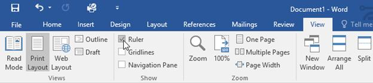
Tampilan Backstage
Tampilan Backstage memberi Anda berbagai pilihan untuk menyimpan, membuka file, mencetak, dan berbagi dokumen Anda. Untuk mengakses tampilan Backstage, klik tab File pada Ribbon.

Klik tombol di interaktif di bawah ini untuk mempelajari lebih lanjut tentang menggunakan tampilan Backstage.

Tampilan dokumen dan zoom
Word memiliki berbagai opsi tampilan yang mengubah cara dokumen Anda ditampilkan. Anda dapat memilih untuk melihat dokumen Anda dalam Mode Baca, Tata Letak Cetak, atau Tata Letak Web. Tampilan ini dapat berguna untuk berbagai tugas, terutama jika Anda berencana untuk mencetak dokumen. Anda juga dapat memperbesar dan memperkecil untuk membuat dokumen Anda lebih mudah dibaca.
Beralih tampilan dokumen
Beralih di antara tampilan dokumen yang berbeda itu mudah. Cukup cari dan pilih perintah tampilan dokumen yang diinginkan di sudut kanan bawah jendela Word.
Read Mode : Tampilan ini membuka dokumen ke layar penuh. Tampilan ini sangat bagus untuk membaca teks dalam jumlah besar atau sekadar meninjau pekerjaan Anda.

Tata Letak Cetak : Ini adalah tampilan dokumen default di Word. Ini menunjukkan seperti apa dokumen itu pada halaman yang dicetak.

Tata Letak Web : Tampilan ini menampilkan dokumen sebagai halaman web, yang dapat membantu jika Anda menggunakan Word untuk menerbitkan konten secara online.

Memperbesar dan memperkecil
Untuk memperbesar atau memperkecil, klik dan seret penggeser kontrol zoom di sudut kanan bawah jendela Word. Anda juga dapat memilih + atau - perintah untuk memperbesar atau secara bertahap. Angka di sebelah penggeser menampilkan persentase zoom saat ini, juga disebut tingkat zoom.

Latihan!
- Buka Word, dan buat dokumen kosong.
- Ubah Opsi Tampilan Ribbon menjadi Tampilkan Tab.
- Menggunakan Kustomisasi Quick Access Toolbar, tambahkan Baru, Cetak Cepat, dan Ejaan & Tata Bahasa.
- Di bilah Tell me, ketik Bentuk dan tekan Enter.
- Pilih bentuk dari menu, dan klik dua kali di suatu tempat di dokumen Anda.
- Tunjukkan Penggaris jika belum terlihat.
- Zoom dokumen menjadi 120%.
- Ubah tampilan Dokumen menjadi Tata Letak Web.
-
Setelah selesai, dokumen Anda akan terlihat seperti ini:

- Ubah Ribbon Display Options kembali ke Show Tabs and Commands, dan ubah Document View kembali ke Print Layout.
Memahami OneDrive (Understanding OneDrive)
Banyak fitur di Office diarahkan untuk menyimpan dan berbagi file secara online. OneDrive adalah ruang penyimpanan online Microsoft yang dapat Anda gunakan untuk menyimpan, mengedit, dan berbagi dokumen dan file lainnya. Anda dapat mengakses OneDrive dari komputer, ponsel cerdas, atau perangkat apa pun yang Anda gunakan. Untuk memulai OneDrive, yang perlu Anda lakukan hanyalah menyiapkan akun Microsoft gratis, jika Anda belum memilikinya.
Sebelum Anda dapat menggunakan alat dan layanan online Microsoft, Anda memerlukan akun Microsoft gratis.
Dalam pelajaran ini, Anda akan belajar cara membuat akun Microsoft Anda sendiri dan cara menavigasi berbagai layanan online Microsoft. Anda juga akan mempelajari cara menyesuaikan halaman profil Anda.
Membuat akun Microsoft
Jika Anda memiliki akun Hotmail atau akun apa pun yang memungkinkan Anda menggunakan layanan Microsoft lainnya, seperti OneDrive atau XBox Live, Anda sudah memiliki akun Microsoft—cukup masuk dengan informasi akun yang ada.
Untuk membuat akun Microsoft:
Masuk ke login.live.com. Cari dan pilih Daftar sekarang.

Akan muncul formulir pendaftaran. Ikuti petunjuk dan masukkan informasi yang diperlukan, seperti nama, tanggal lahir, dan jenis kelamin Anda.

Tinjau Perjanjian Layanan Microsoft dan pernyataan privasi, lalu klik Buat akun.

Akun Microsoft Anda sekarang telah dibuat, dan halaman pengaturan akun akan muncul.

Sama seperti layanan online lainnya, penting untuk memilih kata sandi yang kuat — dengan kata lain, kata sandi yang sulit ditebak orang lain. Untuk informasi lebih lanjut, lihat pelajaran Tips Kata Sandi kami.
Mulai
Setelah Anda membuat akun Microsoft, Anda akan dibawa ke halaman pengaturan akun Microsoft. Untuk menggunakan fitur dan layanan akun Microsoft Anda, seperti OneDrive atau Messenger, Anda harus mengakses halaman profil Anda terlebih dahulu.
Untuk mengakses halaman profil:
Cari dan pilih ikon profil di sudut kanan atas layar, lalu pilih Edit profil dari menu drop-down.

The Halaman profil akan muncul. Dari sini, Anda dapat mengakses bilah alat, yang akan membantu Anda menavigasi layanan online Microsoft.
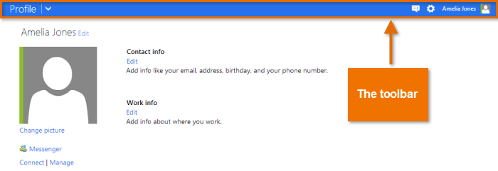
Untuk menggunakan bilah alat:
Klik panah drop-down di sudut kiri atas untuk membuka menu layanan Microsoft: Mail (baik Outlook atau Hotmail), Orang (kontak), Kalender, dan OneDrive (sebelumnya disebut SkyDrive). Cukup klik layanan yang ingin Anda gunakan untuk memulai.
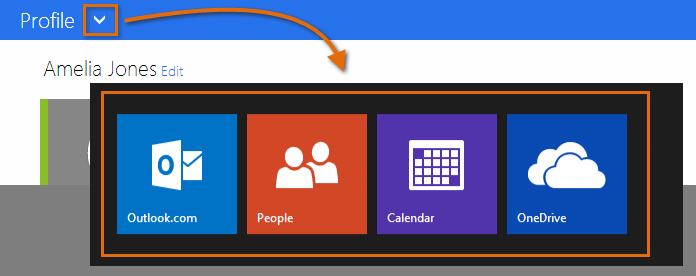
Klik ikon di sudut kanan atas untuk mengakses Messenger, pengaturan profil Anda, dan ikon Roda Gigi, yang mengontrol pengaturan individual untuk setiap layanan Microsoft.

Menyiapkan profil Anda
Setelah Anda menyiapkan akun Microsoft dan terbiasa dengan bilah alat, Anda mungkin ingin menyesuaikan dan menambahkan informasi ke profil pribadi Anda.
Seperti yang Anda pelajari di Pelajaran 1, profil Anda adalah halaman informasi pribadi yang ditautkan ke akun Microsoft Anda. Profil Anda dapat berisi:
Informasi dasar, seperti tanggal lahir dan jenis kelamin Anda
Informasi kontak tambahan
Informasi pribadi tentang pekerjaan, kehidupan sosial, dan pendidikan Anda
Koneksi ke situs jejaring sosial seperti Facebook
Mengisi profil Anda sepenuhnya opsional, dan disarankan untuk tidak menambahkan terlalu banyak informasi pribadi yang mendetail. Namun, mengisi sedikit informasi dapat berguna dalam beberapa situasi. Ini semua tentang memutuskan seberapa banyak Anda ingin berbagi.

Untuk mempelajari lebih lanjut tentang informasi pribadi apa yang aman untuk disertakan dalam profil Anda, lihat pelajaran kami tentangJejaring Sosial Cerdas dan Tip Komunikasi.
Untuk mengakses dan mengedit profil Anda, klik ikon profil di sudut kanan atas, lalu pilih Edit profil dari menu drop-down.
Untuk menambahkan gambar profil:
Navigasikan ke halaman profil Anda, lalu cari dan pilih Ubah gambar.
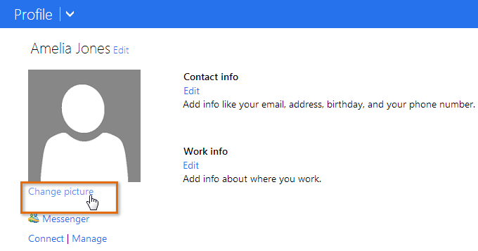
The Halaman gambar profil akan muncul. Klik tombol Pilih File.

Sebuah kotak dialog akan muncul. Cari dan pilih gambar yang diinginkan, lalu klik Open.

Gambar Anda akan muncul. Jika mau, Anda dapat menyeret dan mengubah ukuran kotak untuk memotong gambar Anda. Saat Anda memotong gambar, pratinjau gambar yang dipotong akan muncul di sebelah kiri.

Saat Anda puas dengan gambar yang dipotong, klik Simpan. Gambar profil Anda akan disimpan.
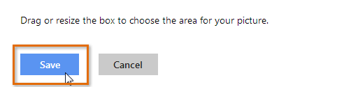
Setelah memiliki akun Microsoft, Anda dapat masuk ke Office. Cukup klik Masuk di sudut kanan atas jendela Word.
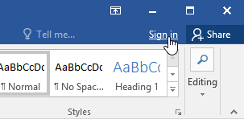
Manfaat menggunakan OneDrive
Setelah Anda masuk ke akun Microsoft Anda, ada beberapa hal yang dapat Anda lakukan dengan OneDrive:
Akses file Anda di mana saja : Saat Anda menyimpan file keOneDrive, Anda dapat mengaksesnya dari komputer, tablet, atau ponsel cerdas mana pun yang memiliki koneksi Internet. Anda juga dapat membuat dokumen baru dari OneDrive.
Cadangkan file Anda : Menyimpan file ke OneDrive memberi mereka lapisan perlindungan ekstra. Bahkan jika sesuatu terjadi pada komputer Anda, OneDrive akan menjaga file Anda tetap aman dan dapat diakses.
Berbagi file : Sangat mudah untuk berbagi file OneDrive Anda dengan teman dan rekan kerja. Anda dapat memilih apakah mereka dapat mengedit atau hanya membaca file. Opsi ini sangat bagus untuk kolaborasi karena beberapa orang dapat mengedit dokumen secara bersamaan (juga dikenal sebagai penulisan bersama).
Menyimpan dan membuka file
Saat Anda masuk ke akun Microsoft Anda, OneDrive akan muncul sebagai opsi setiap kali Anda menyimpan atau membuka file. Anda masih memiliki pilihan untuk menyimpan file ke komputer Anda. Namun, menyimpan file ke OneDrive memungkinkan Anda mengaksesnya dari komputer lain, dan juga memungkinkan Anda berbagi file dengan teman dan rekan kerja.
Misalnya, saat Anda mengklik Simpan Sebagai, Anda dapat memilih OneDrive atau PC ini sebagai lokasi penyimpanan.

Membuat dan Membuka Dokumen (Creating and Opening Documents)
File Word disebut dokumen, Setiap kali Anda memulai proyek baru di Word, Anda harus membuat dokumen baru. yang bisa kosong atau dari templat. Anda juga perlu mengetahui cara membuka dokumen yang ada.
Untuk membuat dokumen kosong baru:
Saat memulai proyek baru di Word, Anda sering ingin memulai dengan dokumen kosong baru.
Pilih tab File untuk mengakses tampilan Backstage,

Pilih New. lalu klik Blank document,

Sebuah dokumen kosong baru akan muncul.
Untuk membuat dokumen baru dari template:
Sebuah Template adalah dokumen pradesain dapat Anda gunakan untuk membuat dokumen baru dengan cepat. Template sering kali menyertakan pemformatan dan desain khusus. sehingga dapat menghemat banyak waktu dan tenaga saat memulai proyek baru.
Klik tab File untuk mengakses tampilan Backstage. lalu pilih New,
Beberapa template akan muncul di bawah opsi Dokumen kosong, Anda juga dapat menggunakan bilah pencarian untuk menemukan sesuatu yang lebih spesifik. Dalam contoh kita, kita akan mencari template flyer,
Saat Anda menemukan sesuatu yang Anda sukai, pilih template untuk mempratinjaunya.

Sebuah pratinjau template akan muncul. Klik Buat untuk menggunakan template yang dipilih.

Sebuah dokumen baru akan muncul dengan template yang dipilih,
Anda juga dapat menelusuri template berdasarkan kategori setelah melakukan pencarian.
Untuk membuka dokumen yang ada:
Selain membuat dokumen baru, Anda sering harus membuka dokumen yang telah disimpan sebelumnya. Untuk mempelajari lebih lanjut tentang menyimpan dokumen, kunjungi pelajaran kami tentang Menyimpan dan Berbagi Dokumen,
Arahkan ke tampilan Backstage. lalu klik Open,
Pilih PC ini. lalu klik Browse, Anda juga dapat memilih OneDrive untuk membuka file yang disimpan di OneDrive Anda.

Kotak dialog Buka akan muncul. Cari dan pilih dokumen Anda. lalu klik Open,

Dokumen yang dipilih akan muncul.
Sebagian besar fitur di Microsoft Office, termasuk Word, ditujukan untuk menyimpan dan berbagi dokumen secara online, Ini dilakukan dengan OneDrive. yang merupakan ruang penyimpanan online untuk dokumen dan file Anda. Jika Anda ingin menggunakan OneDrive, pastikan Anda masuk ke Word dengan akun Microsoft Anda. Tinjau pelajaran kami tentang Memahami OneDrive untuk mempelajari lebih lanjut.
Untuk menyematkan dokumen:
Jika Anda sering bekerja dengan dokumen yang sama. Anda dapat menyematkannya ke tampilan Backstage untuk akses cepat.
Arahkan ke tampilan Backstage. klik Open. lalu pilih Recent,
Daftar dokumen yang baru saja diedit akan muncul. Arahkan mouse ke dokumen yang ingin Anda sematkan, lalu klik ikon pushpin.
Dokumen akan tetap berada di daftar Dokumen terbaru hingga pinnya dilepas. Untuk melepas pin dokumen, klik ikon pushpin lagi.
Mode Kompatibilitas
Terkadang Anda mungkin perlu bekerja dengan dokumen yang dibuat di versi Microsoft Word yang lebih lama, seperti Word 2010 atau Word 2007. Saat Anda membuka jenis dokumen ini, dokumen tersebut akan muncul dalam Mode Kompatibilitas,
Mode Kompatibilitas menonaktifkan fitur tertentu, jadi Anda hanya dapat mengakses perintah yang ditemukan dalam program yang digunakan untuk membuat dokumen. Misalnya, jika Anda membuka dokumen yang dibuat di Word 2007, Anda hanya dapat menggunakan tab dan perintah yang ditemukan di Word 2007.
Pada gambar di bawah, Anda dapat melihat bagaimana Mode Kompatibilitas dapat memengaruhi perintah mana yang tersedia. Karena dokumen di sebelah kiri dalam Mode Kompatibilitas, itu hanya memperlihatkan perintah yang tersedia di Word 2007.
Untuk keluar dari Mode Kompatibilitas, Anda harus mengonversi dokumen ke jenis versi saat ini. Namun, jika Anda berkolaborasi dengan orang lain yang hanya memiliki akses ke versi Word yang lebih lama, sebaiknya biarkan dokumen dalam Mode Kompatibilitas agar formatnya tidak berubah.
Anda dapat meninjau halaman dukungan ini dari Microsoft untuk mempelajari lebih lanjut tentang fitur mana yang dinonaktifkan dalam Mode Kompatibilitas.
Untuk mengonversi dokumen:
Jika Anda ingin mengakses fitur yang lebih baru, Anda dapat mengonversi dokumen ke format file saat ini.
Klik tab File untuk mengakses tampilan Backstage, lalu cari dan pilih perintah Convert,
Sebuah kotak dialog akan muncul. Klik OK untuk mengonfirmasi pemutakhiran file.
Dokumen akan dikonversi ke jenis file terbaru.
Mengonversi file dapat menyebabkan beberapa perubahan pada tata letak asli dokumen.
Tantangan!
Buka dokumen latihan kami,
Perhatikan bahwa dokumen terbuka dalam Mode Kompatibilitas, Konversikan ke format file saat ini. Jika kotak dialog muncul menanyakan apakah Anda ingin menutup dan membuka kembali file untuk melihat fitur baru, pilih Ya,
Dalam tampilan Backstage, sematkan file atau folder.
Menyimpan dan Berbagi Dokumen (Saving and Sharing Documents)
Saat Anda membuat dokumen baru di Word, Anda harus mengetahui cara menyimpannya sehingga Anda dapat mengakses dan mengeditnya nanti. Seperti versi Word sebelumnya, Anda dapat menyimpan file ke komputer. Jika mau, Anda juga dapat menyimpan file ke cloud menggunakan OneDrive. Anda bahkan dapat mengekspor dan berbagi dokumen langsung dari Word.
Simpan dan Simpan Sebagai
Word menawarkan dua cara untuk menyimpan file: Save dan Save As. Opsi ini bekerja dengan cara yang serupa, dengan beberapa perbedaan penting.
Simpan : Saat Anda membuat atau mengedit dokumen, Anda akan menggunakan perintah Simpan untuk menyimpan perubahan Anda. Anda akan sering menggunakan perintah ini. Saat Anda menyimpan file, Anda hanya perlu memilih nama file dan lokasi pertama kali. Setelah itu, Anda dapat mengklik perintah Save untuk menyimpannya dengan nama dan lokasi yang sama.
Save As : Anda akan menggunakan perintah ini untuk membuat salinan dokumen sambil tetap menyimpan aslinya. Saat Anda menggunakan Simpan Sebagai, Anda harus memilih nama dan/atau lokasi yang berbeda untuk versi yang disalin.
Tentang OneDrive
Sebagian besar fitur di Microsoft Office, termasuk Word, ditujukan untuk menyimpan dan berbagi dokumen secara online. Ini dilakukan dengan OneDrive, yang merupakan ruang penyimpanan online untuk dokumen dan file Anda. Jika Anda ingin menggunakan OneDrive, pastikan Anda masuk ke Word dengan akun Microsoft Anda. Tinjau pelajaran kami tentang Memahami OneDrive untuk mempelajari lebih lanjut.
Untuk menyimpan dokumen:
Penting untuk menyimpan dokumen Anda setiap kali Anda memulai proyek baru atau membuat perubahan pada yang sudah ada. Menabung lebih awal dan sering dapat mencegah pekerjaan Anda hilang. Anda juga harus memperhatikan tempat Anda menyimpan dokumen agar mudah ditemukan nanti.
Cari dan pilih perintah Simpan di Quick Access Toolbar.
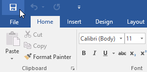
Jika Anda menyimpan file untuk pertama kalinya, panel Save As akan muncul di tampilan Backstage.
Anda kemudian harus memilih tempat untuk menyimpan file dan memberinya nama file. Klik Browse untuk memilih lokasi di komputer Anda. Anda juga dapat mengklik OneDrive untuk menyimpan file ke OneDrive Anda.

Kotak dialog Simpan Sebagai akan muncul. Pilih lokasi di mana Anda ingin menyimpan dokumen.
Masukkan nama file untuk dokumen, lalu klik Simpan.

Dokumen akan disimpan. Anda dapat mengklik perintah Simpan lagi untuk menyimpan perubahan saat Anda memodifikasi dokumen.
Anda juga dapat mengakses perintah Save dengan menekan Ctrl+S pada keyboard Anda.
Menggunakan Simpan Sebagai untuk membuat salinan
Jika Anda ingin menyimpan versi dokumen yang berbeda dengan tetap mempertahankan aslinya, Anda dapat membuat salinan. Misalnya, jika Anda memiliki file bernama Laporan Penjualan, Anda dapat menyimpannya sebagai Laporan Penjualan 2 sehingga Anda dapat mengedit file baru dan tetap merujuk kembali ke versi aslinya.
Untuk melakukan ini, Anda akan mengklik perintah Save As dalam tampilan Backstage. Sama seperti saat menyimpan file untuk pertama kalinya, Anda harus memilih tempat menyimpan file dan memberinya nama file baru.
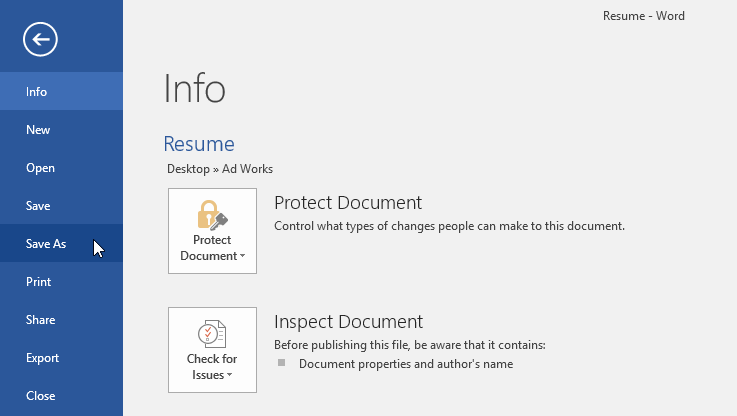
Untuk mengubah lokasi penyimpanan default:
Jika Anda tidak ingin menggunakan OneDrive, Anda mungkin frustrasi karena OneDrive dipilih sebagai lokasi default saat menyimpan. Jika Anda merasa ini tidak nyaman, Anda dapat mengubah lokasi penyimpanan default sehingga PC ini dipilih secara default.
Klik tab File untuk mengakses tampilan Backstage.

Klik Opsi.

The Word Options kotak dialog akan muncul. Pilih Simpan di sebelah kiri, centang kotak di samping Simpan ke Komputer secara default, lalu klik OK. Lokasi penyimpanan default akan diubah.
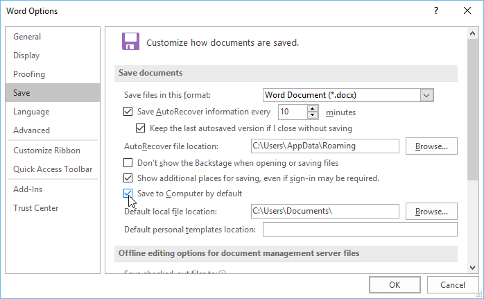
Pulihkan Otomatis
Word secara otomatis menyimpan dokumen Anda ke folder sementara saat Anda mengerjakannya. Jika Anda lupa menyimpan perubahan atau jika Word mogok, Anda dapat memulihkan file menggunakan AutoRecover.
Untuk menggunakan PemulihanOtomatis:
Buka Kata. Jika versi file yang disimpan secara otomatis ditemukan, panel Pemulihan Dokumen akan muncul di sebelah kiri.
Klik untuk membuka file yang tersedia. Dokumen akan dipulihkan.

Secara default, Word menyimpan otomatis setiap 10 menit. Jika Anda mengedit dokumen kurang dari 10 menit, Word mungkin tidak membuat versi penyimpanan otomatis.
Jika Anda tidak melihat file yang Anda butuhkan, Anda dapat menelusuri semua file yang disimpan secara otomatis dari tampilan Backstage. Pilih tab File, klik Manage Versions, lalu pilih Recover Unsaved Documents.

Mengekspor dokumen
Secara default, dokumen Word disimpan dalam tipe file.docx. Namun, ada kalanya Anda perlu menggunakan jenis file lain, seperti dokumen PDF atau Word 97-2003. Sangat mudah untuk mengekspor dokumen Anda dari Word ke berbagai jenis file.
Untuk mengekspor dokumen sebagai file PDF:
Mengekspor dokumen Anda sebagai dokumen Adobe Acrobat, umumnya dikenal sebagai file PDF, dapat sangat berguna jika Anda berbagi dokumen dengan seseorang yang tidak memiliki Word. File PDF akan memungkinkan penerima untuk melihat—tetapi tidak mengedit—konten dokumen Anda.
Klik tab File untuk mengakses tampilan Backstage, pilih Export, lalu pilih Create PDF/XPS.

Kotak dialog Simpan Sebagai akan muncul. Pilih lokasi tempat Anda ingin mengekspor dokumen, masukkan nama file, lalu klik Terbitkan.
Jika Anda perlu mengedit file PDF, Word memungkinkan Anda mengonversi file PDF menjadi dokumen yang dapat diedit. Baca panduan kami tentang Mengedit File PDF untuk informasi lebih lanjut.
Untuk mengekspor dokumen ke jenis file lain:
Anda mungkin juga merasa terbantu untuk mengekspor dokumen Anda ke jenis file lain, seperti Dokumen Word 97-2003 jika Anda perlu berbagi dengan orang-orang yang menggunakan versi Word yang lebih lama atau file.txt jika Anda memerlukan versi teks biasa dari dokumen Anda. dokumen.
Klik tab File untuk mengakses tampilan Backstage, pilih Export, lalu pilih Change File Type.

Pilih jenis file, lalu klik Simpan Sebagai.

Kotak dialog Simpan Sebagai akan muncul. Pilih lokasi tempat Anda ingin mengekspor dokumen, masukkan nama file, lalu klik Simpan.
Anda juga dapat menggunakan menu drop-down Save as type di kotak dialog Save As untuk menyimpan dokumen ke berbagai jenis file.

Berbagi dokumen
Word memudahkan berbagi dan berkolaborasi pada dokumen menggunakan OneDrive. Di masa lalu, jika Anda ingin berbagi file dengan seseorang, Anda dapat mengirimkannya sebagai lampiran email. Meskipun nyaman, sistem ini juga membuat beberapa versi dari file yang sama, yang mungkin sulit diatur.
Saat Anda membagikan dokumen dari Word, Anda sebenarnya memberi orang lain akses ke file yang sama persis. Ini memungkinkan Anda dan orang yang Anda bagikan untuk mengedit dokumen yang sama tanpa harus melacak beberapa versi.
Untuk membagikan dokumen, dokumen tersebut harus disimpan terlebih dahulu ke OneDrive Anda.
Untuk membagikan dokumen:
Klik tab File untuk mengakses tampilan Backstage, lalu klik Share.
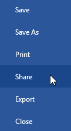
Sebuah Kirim Tautan jendela akan muncul.
Klik tombol di interaktif di bawah ini untuk mempelajari lebih lanjut tentang berbagai cara berbagi dokumen.
Tantangan!
Buka dokumen latihan kami.
Gunakan Save As untuk membuat salinan dokumen. Beri nama salinan baru Saving Challenge Practice. Anda dapat menyimpannya ke folder di komputer Anda atau ke OneDrive Anda.
Ekspor dokumen Anda sebagai PDF.